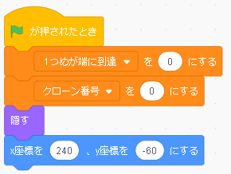
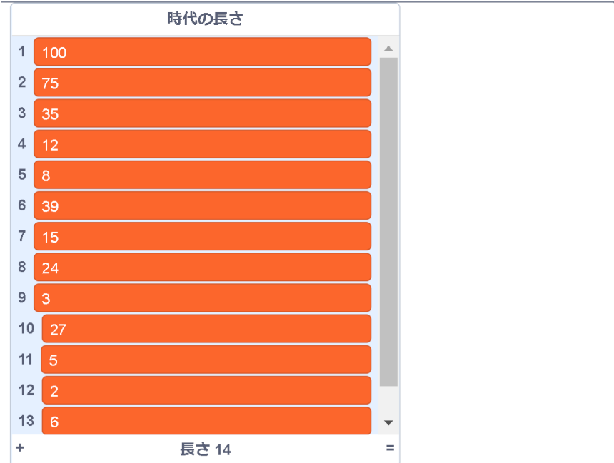
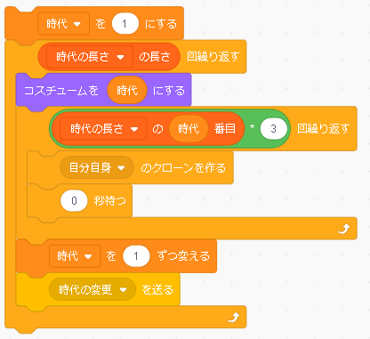
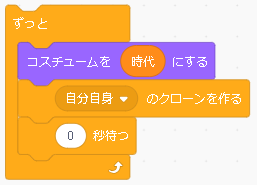
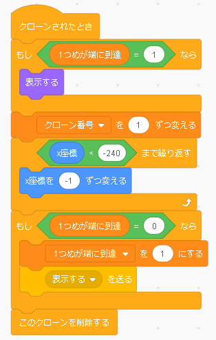
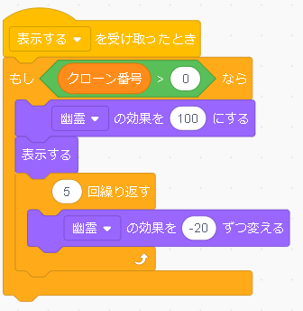
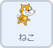
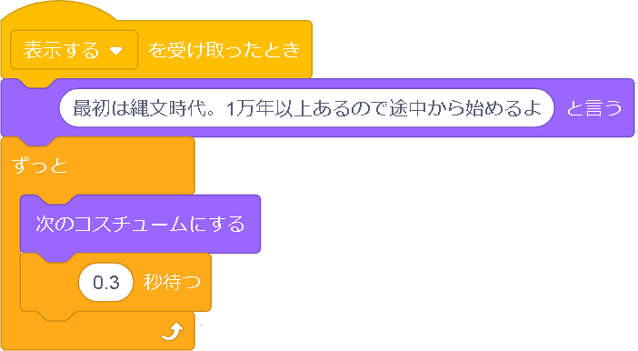

日本の歴史を歩く
日本の縄文から令和までの時代の長さが視覚的にわかるプログラムです。 プログラムはリストを使うのでちょっと難しいです。 ですが、量的はさほどない気がします。 難しさ含めると、 小学６年生ぐらいがベストかなと思います。 また、事前準備が多いプログラムなので、この完成したプログラムのブロックを一部削除してから使いましょう。
プログラムするスプライト |
|
|  | １．時代の長さ分の複製を作る
まず、スプライトをバーにして流れるように見せるために、 スプライトを大量に複製しなければなりません。 ちなみに、スプライトのコスチューㇺも縄文から令和までの時代の数分用意されています。 まず、緑の🏴が押されたらスクロールするバーの準備を行います。 用意してある変数をゼロにし、バーを隠します。 そして、スタート位置を決めます。 右端から登場させたいので、ｘ座標を２４０にします。 これで準備第一段階完了です。 |
|  |
次に、複製する段階に入ります。 時代の長さによって複製する量を変更し、さらに、その複製したスプライトにもプログラムを組まなくてはいけません。 時代分変数を作り、いちいち時代の長さを入れるのは非常に大変なので、リストというものを使います。 リストというのは、データを一覧にしたもの、という感じかな、、、。 沢山のデータを入れることができて、入れた物順に１から番号が当てられます。。 このチェックボックスにチェックを入れると、左のような表が表示されます。これがリストです。 今回のリストには「時代の長さ」という名前が付けられています。 リストの名前と番号を指定すれば、そこにあるデータが呼び出されます。 今回であれば、時代の長さの１と指定すれば、100として扱われるという感じです。 今回の時代の長さの中には、1番から縄文時代、弥生時代のように時代の年数の十の位以上の数字が入っています。 時代という変数は、この番号を指定するために用意されています。 １番は縄文時代 ２番は弥生時代のように、 リストの番号と時代が対応していることが必須です。数字と時代の対応表のようなものを準備しておくのも手だと思います。 （★ちなみに、このリストには令和はありません。） ちなみにこのリストはゼロから作るには用意しなければいけないものなのですが、このプログラムにはその過程がないので、このまま使ってください。 |
|  |
それぞれの時代の長さは設定できたので、ひたすらクローンを作っていくプログラㇺです。 時代の長さによって複製する量を変更し、さらに、その複製したスプライトにもプログラムを組まなくてはいけません。 時代分変数を作り、いちいち時代の長さを入れるのは非常に大変なので、リストというものを使います。 まず、時代分作りたいので、 時代の長さの長さ 回繰り返します。 長さというのは、量・数だと思ってください。 つまり、そのリストに入っている個数（時代の数）のことです。その個数の分繰り返します。 繰り返す前に、「時代」変数を１にします。繰り返しの中に入れてしまうと、毎回１にされてしまうからです。 そして、コスチュームを一番目にし、そのクローンを 「時代の長さ」（というリスト）の「時代（変数）」番目（の中にあるデータ（数））×３回、クローンを作ります。おそらく三倍にしたのは短くなってしまったからかな、と思います。さらに０秒待つというのも、大量に高速で作るため、クローン同士のずれがなくなってしまうので、一呼吸置き、新しいクローンを作るために置いたものだと思われます。 クローンをたくさん作ったら、次の時代のクローンを作るために「時代」の変数を１増やします。 時代の変更を送るとありますが、時代の変更のメッセージが送られてから実行するブロックがなかったので消してもらって構いません。 これでバーの生成が終わったと思いきや、 |
|  |
このようなプログラムがあります。実は先ほどリストに令和がないと書きました。 リストにないので、この繰り返しは令和を作る前に終了し、上の画像の繰り返しに移動します。 ただ、令和のバーのコスチュームは用意されていて、さらには14回目の繰り返しで、「時代」変数には14+１の状態で繰り返しが終わったため、コスチュームが15番目のバー（令和のバー）が永遠に繰り返されます。 |
プログラムするスプライト
|
|
|  | ２．大量にできた複製を動かす
大量に複製したクローンたちを動かします。 唯一繰り返されているブロック群があります。これがクローンを動かしています。 今現在xが240の位置にいるので、ｘが-240つまり左端に到達するまで、ｘの-1を繰り返します。 これを繰り返すことで、動いて見えるわけです。 この動くクローンがほんの少しずつ位置を右側にずれた状態で同じスピードで動いているので、あの細長いスプライトがバーに見えるわけです。 さて、ほかのもし～というブロックが残っていますが、プログラムの実行画面を思い出していただくと、縄文時代のグレーのバーは、端から登場したのではなく、すでに出来上がったバーとして徐々に現れています。 この仕組みは、実は、作られたクローンたちは端っこから徐々に登場しているのですが、 この動かすプログラムだけだと①で置いた隠すというブロックが効いており表示されないまま複製だけされている状態になってしまうのです。 なので一番最初にできたグレーのクローンが端っこに到達したときに、すべてのバーを見えるようにしているのです。 一つ目が端に到達という変数があるのはそのためで、 一番初めにクローンができたとき（縄文時代のバーの一番先頭）は、
そして、クローン番号を0から1増やし、xの端まで動かした後に、 表示するというメッセージを送ります。 |
|  |
このメッセージを受け取ったとき、 そして、クローン番号がゼロよりも大きい場合、実行されます。 幽霊の効果というのは、透明度のことで、幽霊の効果が大きいほど透明で、小さいほど透明でないという感じになっています。 まず、クローンの幽霊の効果を１００、つまり、見えないようにした後に表示します。これで、表示はされているのですが、効果によって見えなくなっています。 そのあと、効果を少しずつ減らすことで、少しずつ見えるようになっています。 このプログラムは、少しずつ表示させるような効果を付けるためのものです。 |
プログラムするスプライト |
|
| ３．猫を歩かせる
次に歩いている猫のプログラムです。 最初に、旗が押されたとき、コスチュームを１にし、「歴史をたどっていくよ」と言わせます。いわなくてもいいです。 |
|
|  |
そして、時代のバーのプログラムで、［表示する］というメッセージを送ったので、そのメッセージが届いたら、縄文時代から始めるよと言います。このメッセージが猫さんを動かすきっかけにします。 そして、次のコスチュームにして、0.3秒待つというのを繰り返すと、歩いている風に見せることができます。 |